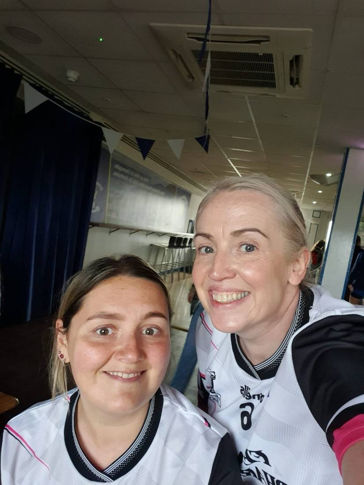
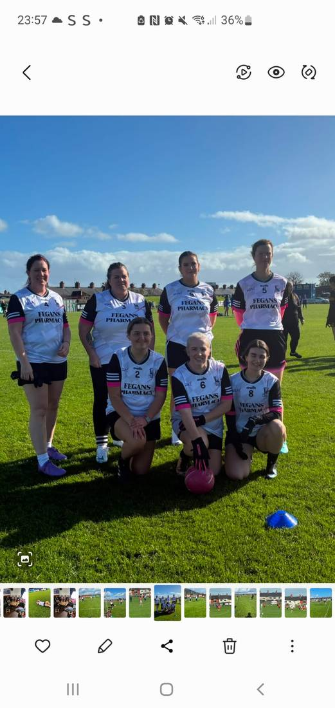
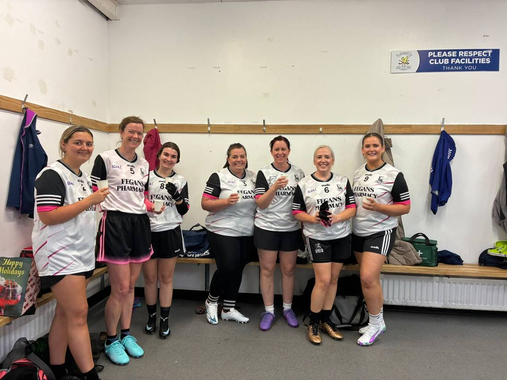
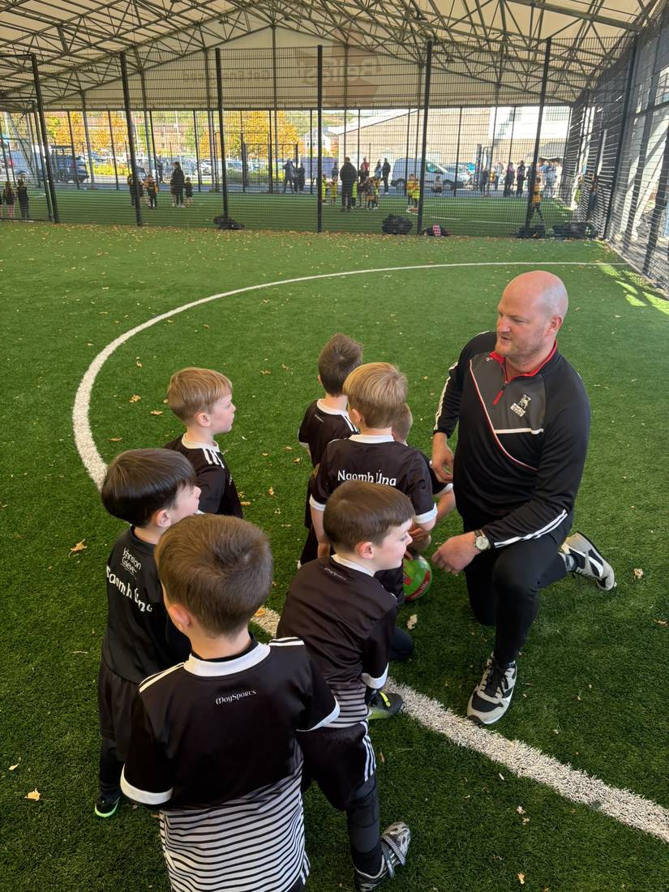
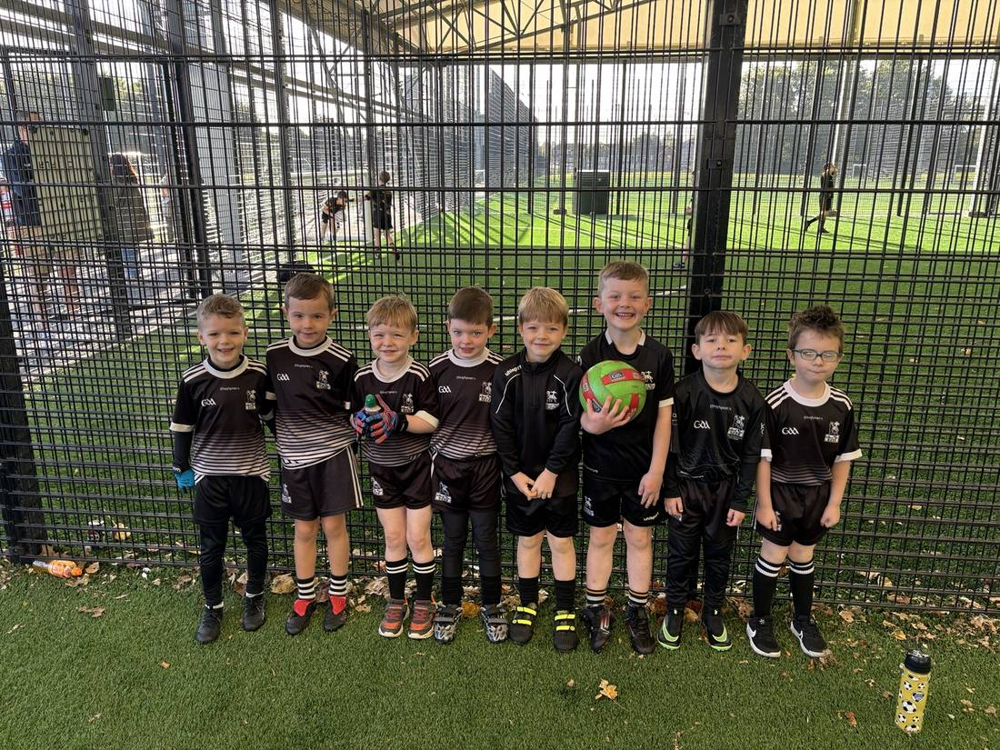
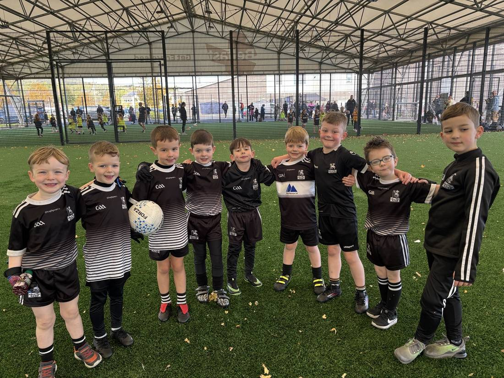
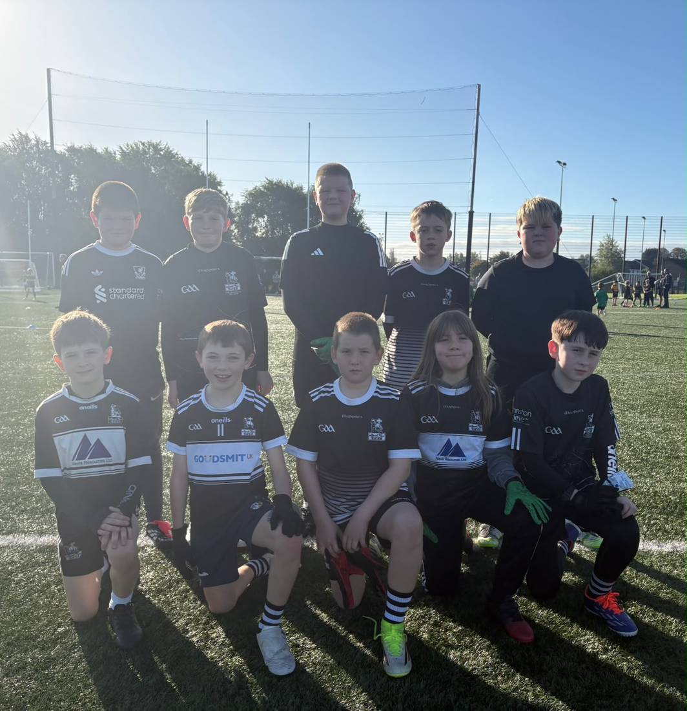
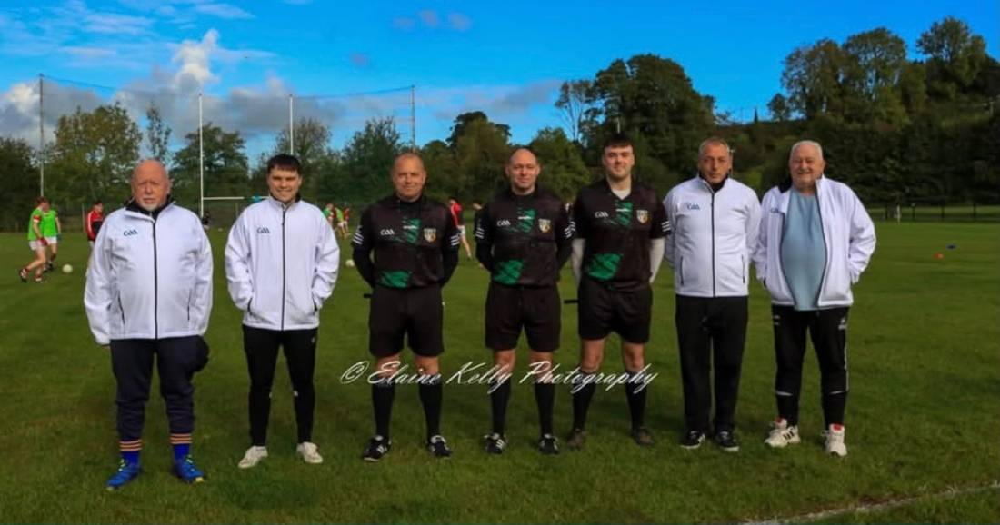
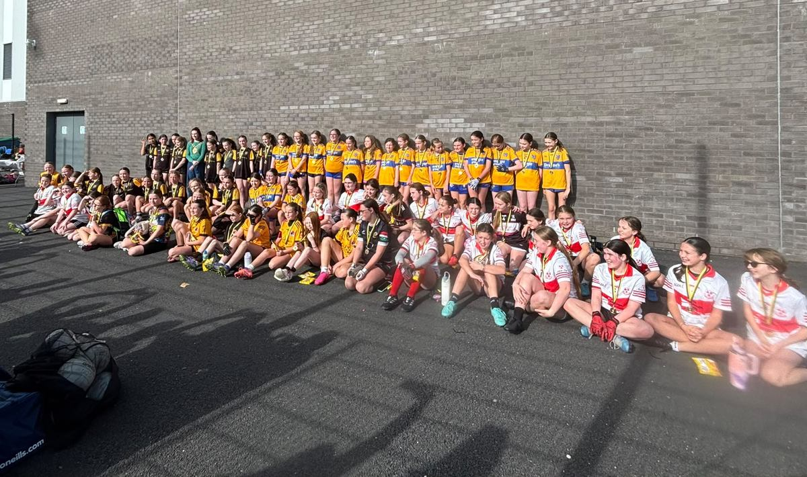
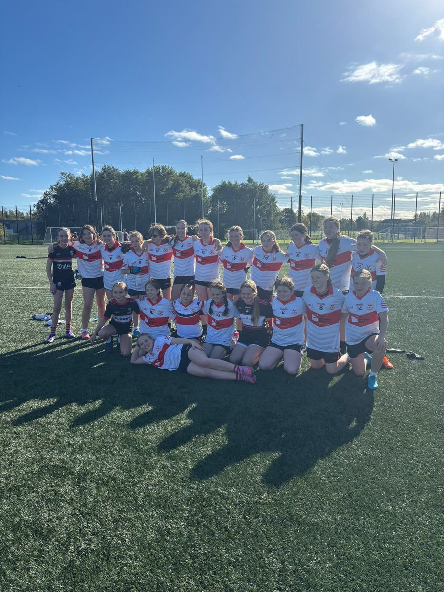

A weekend full of firsts, strong performances and proud moments for the St Agnes community.

A proud moment for the team.

The team at St John’s for their historic first blitz.

Celebrating a brilliant first outing.
A Historic First for G4M&O
St Agnes Gaelic 4 Mothers & Others team took part in their very first blitz on Saturday, hosted by St John’s at Corrigan Park!
There were some nerves, but plenty of laughs as they showed off some great skills and teamwork. Definitely one for the Aggies history books! 💪💗
Ní neart go cur le chéile! 🖤🤍

Taking in some last instructions.

A great first tournament for our U6s.

All smiles after a super performance.
U6 Players Make Their Debut
Our juvenile boys and girls enjoyed a brilliant Sunday at the Paul Cole Tournament, hosted by Colin Gaels GAC.
Many of our U6 legends made their debut against Pearses and produced a super performance. Well done to the children and coaches—the future of the club is in safe hands!

Our U10 boys at the Paul Cole Tournament.
U10 Boys Shine
Our U10 boys also played brilliantly against Colin Gaels, combining an excellent team effort with some beautiful scores.
Well done, lads—you were brilliant and represented the club with pride.

Declan McLarnon and his team of officials at the Minor A semi-final between St Paul’s and Moneyglass, in Moneyglass.
Congratulations to Declan and His Officials
A big well done to Declan McLarnon and his team of officials, who took charge of the Minor A semi-final between St Paul’s and Moneyglass in Moneyglass.
U12 Girls Reach the Final
Hard luck to our tremendous U12 girls, who played stunning football throughout the blitz to reach the final before narrowly losing at the end.
Well done to Iona, Daisy, Orla, Lily, Mallaidh, Aoife and Phoebe for a fabulous effort. Lucy and Siubhán also made their U12 debuts and were brilliant.

Teams at the Paul Cole Tournament.

Our U12 girls after the final.
12–18 October 2026
The Week Ahead
No competitive club fixtures have been confirmed as activities continue to wind down for the year.
Friday 16 October
Juvenile Training
6:00–7:00pm · Woodlands 4G
All new children are very welcome.
Thank you to all our players, coaches, families and volunteers for another memorable weekend.